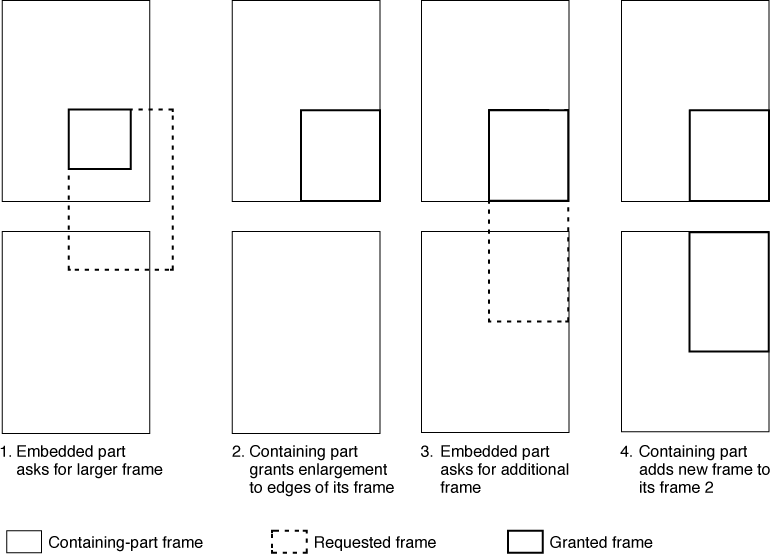

Frame Negotiation
Each part in an OpenDoc document controls the positions, sizes, and shapes of its embedded frames. At the same time, embedded parts may need to change the sizes, shapes, or numbers of the frames in which they are displayed. Read this section if your part expects to negotiate its display frame sizes with its containing part, or if it is a container part and expects to negotiate the sizes of its embedded frames with their parts.Either party can initiate the negotiation, although the containing part has unilateral control over the outcome. Figure 3-2 shows an example of frame negotiation. In this example, an embedded part with a single display frame requests a larger frame size from its containing part, which has two display frames.
Figure 3-2 An example of frame negotiation with multiple frames

In this case, the embedded part initiates the frame negotiation. Its frame is wholly contained within frame 1 (the upper frame) of the containing part.Frame negotiation from the point of view of the embedded part is discussed in the sections "Resizing a Display Frame"and "Requesting an Additional Display Frame". Frame negotiation from the point of view of the containing part is discussed in the sections "Resizing an Embedded Frame" and "Adding an Embedded Frame on Request".
- The embedded part asks the containing part for a significantly larger frame, perhaps to fit material pasted in from the clipboard. The embedded frame is not concerned with, and does not even know, where or how the larger frame will fit into the containing part's content.
- The containing part decides, on the basis of its own content model, that the requested frame is too large to fit within frame 1. The containing part instead increases the size of the embedded frame as much as it can, assigns it a place in its content area, and returns the resulting frame to the embedded part.
- The embedded part accepts the frame given to it. If it were to repeat step 1 and ask for the original larger frame again, the containing part would simply repeat step 2 and return the same frame. But the embedded part still wants more area for its display, so it tries a different tack; it requests another display frame, this time to be embedded in frame 2 (the lower frame) of the embedded part.
- The containing part decides that the requested frame will fit in frame 2. It assigns the frame a place within frame 2 and returns the frame to the embedded part.